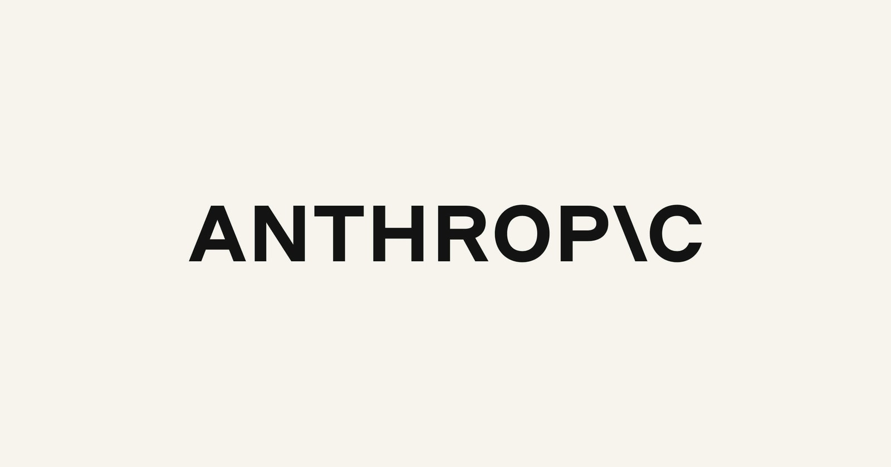
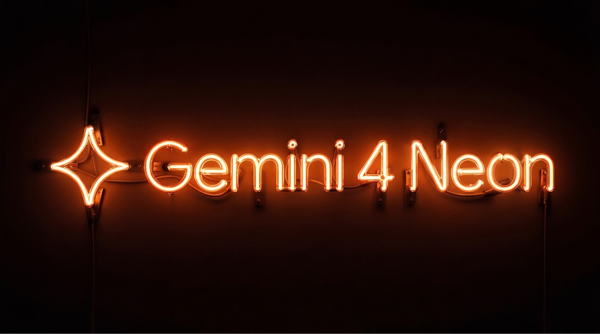
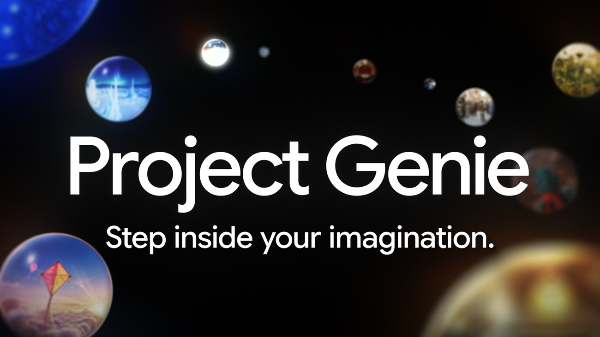
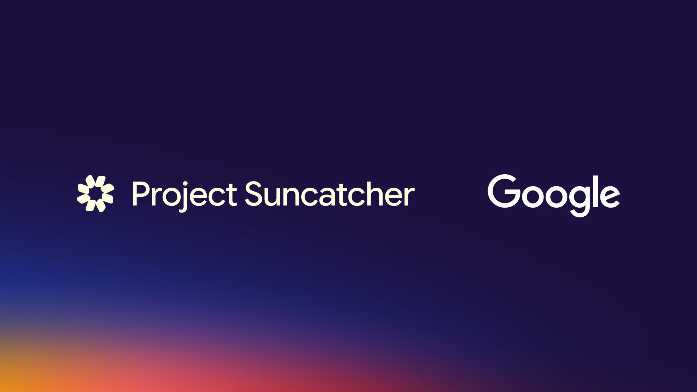
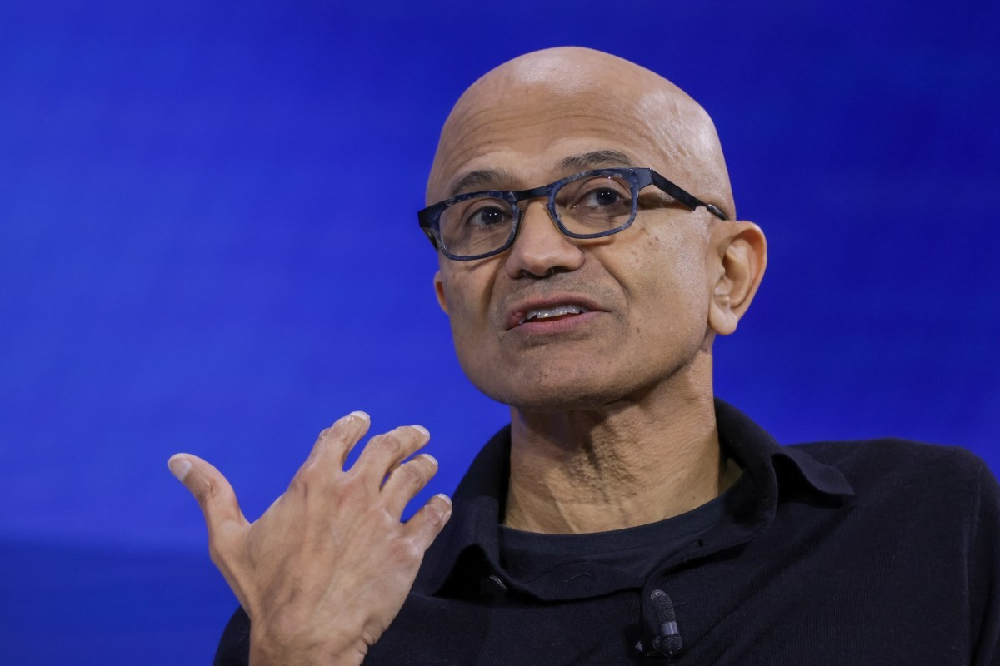
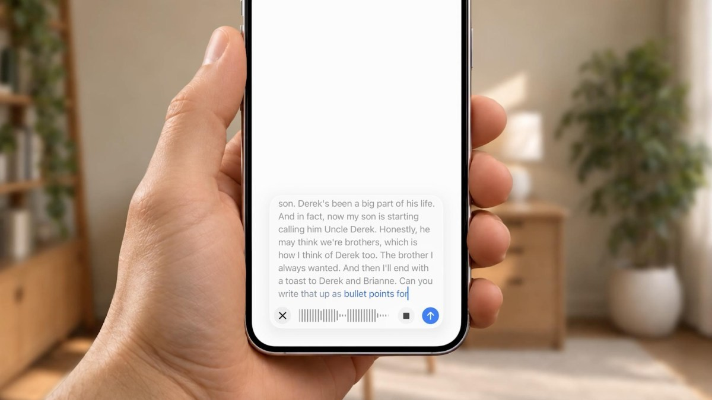

2026 · 星期四 AIHOT × X × WaytoAGI × 官方 × 媒体
11/ 19
AI 早报
窗口：北京时间 2026-11-19 00:00–24:00（UTC 2026-11-18T16:00:00Z–2026-11-19T16:00:00Z）
主线 1 2 3 4 5 6 7 今日一句话 11 月 19 日的主轴是 Anthropic 以每股 83.00 美元定价、代码 ANT 走进上市日，以及 Google 发布 Gemini 4 Neon、并向 AI Ultra 开放 Genie 4 新体验 。Anthropic 官方定价稿写明发行 9.80 亿 股 Class A（公司出售 956,351,354 股，出售股东 23,648,646 股，后者收益公司不得），并授予承销商 30 天期权最多再购 1.47 亿 股；预计 11 月 19 日在纳斯达克以 ANT 开交易、20 日交割。官方稿没有市值和募资总额。窗口内能核对的是定价宣布、Nasdaq 开盘铃讲话，以及 CNBC 在窗口结束前记录的指示性开盘 105 美元 （匿名信源，未证实 ，不是成交价）。首笔成交与收盘发生在 16:00Z 之后，开盘约 111.50 美元、收盘 97.17 美元等数字留待下期。同日凌晨，Gemini 4 Neon 官博写明在 Artificial Analysis Intelligence Index 以 xhigh 得 61 分、整体第 3，API 定价为每百万 token 输入 3 美元 、缓存输入 0.15 美元 、输出 15 美元 ；Project Genie 则向符合条件的 Ultra 用户首次提供 Genie 4 。下午 Google 与 Blue Origin 宣布 Project Suncatcher 首次重型发射协议，目标 2029 年一季度 。
主线 7 条 01 产业 头条 未证实项
Anthropic 定价每股 83.00 美元、代码 ANT 走进上市日；开盘与收盘留待下期 11-19 07:29 北京时间 窗口内最重要的产业新闻 · TechCrunch 22:11:15Z · @AnthropicAI 23:29:00Z（北京 07:29） 独立来源 4 家

Anthropic 定价公告主视觉（图片来源：anthropic.com / assets.claude.com og:image）
介绍
Anthropic 官方新闻稿宣布，其 Class A 普通股 IPO 定价为每股 83.00 美元 ，预计 11 月 19 日在 Nasdaq Global Select Market 以代码 ANT 开始交易，交割预计 11 月 20 日。官方页面的 datePublished 只写 2026-11-18T00:00:00Z（典型仅日期戳），不能当作精确发布时间；窗口内最早可核对的精确媒体时间是 TechCrunch 2026-11-18T22:11:15Z（北京 06:11）。@AnthropicAI 于 23:29:00Z（北京 07:29）发帖确认定价 83 美元、预计次日开交易。同日美东上午，CNBC 直播记录了 Daniela Amodei 与 Dario Amodei 在 Nasdaq 开盘铃前的致辞（14:27–14:33Z，北京 22:27–22:33）。窗口结束前，正股尚未成交。
为什么重要
这是上期已按窗口留到今天的产业头条：一家前沿模型公司以可核对的发行条款进入公开市场。需要把官方写明的价格、股数、代码和日程，与媒体测算的募资额、估值，以及窗后才出现的开盘价、收盘价分开写，避免把上市日包装成已经完成的首日行情。
要点
官方条款 ：发行 980,000,000 股 Class A，其中 956,351,354 股由公司出售，23,648,646 股由部分出售股东出售，公司不会获得后者收益。另授予承销商 30 天期权，最多再购 147,000,000 股。SEC 注册声明于 11 月 18 日生效；承销商包括 Goldman Sachs & Co. LLC 与 Morgan Stanley & Co. LLC。官方稿没有 市值，也没有 写出募资总额美元数。窗口内上市日仪式（CNBC 直播，16:00Z 之前的条目） ：14:27:10Z Daniela Amodei 称 “This technology needs you — not your trust, not your use, but your voice…”。14:33:35Z Dario Amodei 重申安全与节奏，CNBC 记其称 “Today puts the company in a stronger financial position, and in doing so, only strengthens our resolve to do the right thing.” 以及 “…race to the top.” 这些是致辞记录，不是成交报价。媒体数字，须与官方对读并标未证实 ：TechCrunch 写发行价高于此前预期区间 70–78 美元 ，并称整次发行 “generating $81.3 billion in proceeds”、fully diluted 估值约 1.5 万亿美元 。81.3 为 9.80 亿股×83 美元的算术，不是官方原句，且其中股东出售部分公司拿不到；公司出售部分算术为 79,377,162,382 美元。CNBC 15:52:59Z 引匿名信源称指示性开盘 105 美元 ，并写预计“这一小时内”开盘——这是未证实的指示价 ，不是成交价。招股书中的循环持股、七家芯片/云巨头按发行价合计约 260 亿美元等，因 S-1 全文未打开 ，只作媒体转述，未证实 。窗后、不写入本期已核事实 ：CNBC 在 16:48–16:53Z 前后才确认首笔成交与约 34% 的开盘涨幅；媒体此后写开盘约 111.50 美元 、收盘 97.17 美元 、约 +17%，以及收盘 fully diluted 市值约 1.8 万亿美元。这些都发生在 16:00Z 之后，留给下期。@AnthropicAI 于窗口内 15:02:20Z（北京 23:02）另发一条无文字说明的 72 秒官方视频，互动为当日最高；未观看视频，不把它写成敲钟或开盘画面。⚠ 官方稿无市值、无募资总额；媒体 $81.3B / 约 $1.5T 估值为测算，未证实
⚠ CNBC 指示性开盘 $105 为匿名信源，不是成交价，未证实
⚠ 循环持股、$26B 私募等因未打开 S-1 全文，未证实
⚠ 开盘约 $111.50、收盘 $97.17、约 +17% 及收盘市值均在 16:00Z 之后，不作为本期已核事实
02 模型 未证实项
Google 发布 Gemini 4 Neon：AA Index 61 分排第 3，API 定价每百万 token 输入 3 美元、输出 15 美元 11-19 05:00 北京时间 官博 21:00:00Z（北京 05:00）· @sundarpichai 21:33:40Z · 热点第 2 独立来源 2 家

Google 介绍 Gemini 4 Neon 的官博主视觉（图片来源：blog.google header）
介绍
Google DeepMind 官博《Introducing Gemini 4 Neon》的 JSON-LD datePublished 为 2026-11-18T21:00:00Z（北京 05:00），定位为前沿智能与快速端到端任务完成，覆盖复杂软件工程、知识工作与科学工作流。作者为 Koray Kavukcuoglu。@sundarpichai 于 21:33:40Z（北京 05:33）宣布上线，@GoogleDeepMind、@Google、@GeminiApp、@demishassabis、@OfficialLoganK 在窗口内同步转发。deepmind.google 旧链会跳转到 blog.google 规范页。
为什么重要
这是上期已预告、按窗口留到今天的模型主线。官方同时给出可核对的第三方指数名次、API 单价和 100 万 token 上下文，是理解 Google 这一档模型怎么定价、卖给谁的直接依据。Office 文件直传是同日 changelog 的官方表述，但 changelog 只有日期、没有时分，不能写成官博 21:00Z 原句。
要点
官方基准 ：在 Artificial Analysis Intelligence Index 上，xhigh thinking 得 61 分，整体第 3 。Vals Index 第 2 、70.9% ，并在 Legal Research Bench 与 Tax Agent Bench 上为第 1。Agent Arena Index 全球第 2 、1336 分（文称基于 4,200+ 真实智能体会话）。官博还列出默认 high thinking 下，每任务成本比 Carbon 低 32% ；在 Vals 与 Agent Arena 的 Pareto 前沿上，较顶尖竞品每任务成本大约低 50%–80% 。API 定价与可用性 ：每百万 token 输入 3 美元 、缓存输入 0.15 美元 （官方写 95% discount）、输出 15 美元 ；100 万 token 上下文。向 Gemini API（Google AI Studio）、Gemini for business，以及付费 Google AI Pro / Ultra 用户的 Google Antigravity 与 Gemini app 推出。思考档位为 low / medium / high（默认）/ xhigh。同日 API changelog（仅日期 November 18，无精确时分） ：写明 Gemini 4 Neon（gemini-4-neon）一般可用，并称现可把 Microsoft Office 与 OpenDocument 文件（Word、PowerPoint、Excel）直接传给 Gemini API，还可按页、工作表、单元格或时间段切片。这句没有 出现在 Neon 官博正文里，只作为同日官方更新记录，不以 21:00Z 时间戳绑定。不要写成窗后功能 ：Mac 版 Gemini 的 computer use、以及 Tool Retrieval 预览，官方时间都在 16:00Z 之后，留给下期。⚠ Office/OpenDocument 直传只见于同日 changelog，changelog 无精确时分，不是 Neon 官博原句
03 产品 未证实项
Project Genie 向 AI Ultra 首次提供 Genie 4；Genie 3 单段最长可达 3 分钟 11-19 02:00 北京时间 官博 18:00:00Z（北京 02:00）· @GoogleDeepMind 18:14:47Z 独立来源 2 家

Google 介绍 Project Genie / Genie 4 新体验的官博配图（图片来源：blog.google thumbnail）
介绍
Google 官博《Genie 4 is now available》的 JSON-LD datePublished 为 2026-11-18T18:00:00Z（北京 02:00）。文称向符合条件的 Google AI Ultra 订阅者推出新的 Project Genie 体验，首次提供 Genie 4 ，同时升级 Genie 3，并新增 Project Genie agent 与社区 gallery。@GoogleDeepMind 于 18:14:47Z（北京 02:14）发帖，@Google、@sundarpichai、@GoogleLabs、@joshwoodward、@demishassabis 在窗口内亦有宣布。Genie 4 模型本身的原发布更早，已在此前覆盖，本期只写这次产品体验。
为什么重要
这是上期已预告的产品增量：世界模型从研究演示变成付费订阅可玩的产品形态。官方把「谁能用」「会话能有多长」「内容如何标记」写得很清楚；把稍后才出现的 API / AI Studio 上线留在窗外，避免把两天的发布并成一次。
要点
Genie 4（官方） ：可在探索中途用自然语言实时改世界（天气、角色、剧情），并首次搭配 real-time native audio（从环境声到角色对白）。Genie 3 升级 ：模型选择器中仍保留 Genie 3。单段生成最长 3 minutes （此前 60 seconds ），可以把多个世界串起来；新增 360° 全景图 grounding，以及实时的 in-world events。Agent、gallery 与责任 ：新的 Project Genie agent 用对话编排多模态模型，生成初始视觉与背景音乐，探索时也可引入 Gemini。全部视频与音频带 SynthID 水印，输入输出经过 safety screenings。Google AI Pro 成员可在同一页面排队。不要写 API ：Genie 4 上线 Gemini API / AI Studio 的相关宣布约在 17:17Z（北京 11-20 01:17），属于窗后，留给下期。⚠ Genie 4 模型原发布已覆盖，本期只写向 Ultra 开放的新体验
⚠ API / AI Studio 上线为窗后，未写入要点
04 产业 未证实项
Google 与 Blue Origin 达成 Project Suncatcher 发射协议，目标 2029 年一季度用 New Glenn 送卫星入轨 11-19 21:00 北京时间 官博 13:00:00Z（北京 21:00）· The Verge 13:53:38Z · 热点第 6 独立来源 4 家

Blue Origin 宣布为 Project Suncatcher 提供 New Glenn 发射服务的新闻配图（图片来源：blueorigin.com）
介绍
Google 官博于 2026-11-19T13:00:00Z（北京 21:00）宣布，与 Blue Origin 就 Project Suncatcher 的首次重型发射达成合作。这是 Google 所说的长期 moonshot：利用轨道上的太阳能，把人工智能基础设施放到太空。Blue Origin 官方新闻稿同日发布（页面只标 Nov 19，无精确时分），The Verge 见报时间为 13:53:38Z（北京 21:53）。
为什么重要
把数据中心搬到轨道不再只是概念图：两家官方同时给出了运载火箭、轨道、目标和单星算力的量级。需要分清哪些数字出自 Google 短博、哪些只写在 Blue Origin 稿里，也要避免把 Verge 补充的背景发射史写成今天的新事实。
要点
已核官方日程与规格 ：目标 2029 年第一季度 （Q1 2029）；使用 Blue Origin 重型运载火箭 New Glenn ；卫星进入 太阳同步轨道 ；每颗卫星的算力大约相当于一个 data center rack 。Google 短博与 Blue Origin 稿在这些表述上一致。TPU 只出现在 Blue Origin 官方稿 ：Blue Origin 写明这是 launch services agreement，卫星网络将配备 Google 的 AI 芯片 Tensor Processing Units (TPUs) 。Google 自己的短博没有 出现 TPU 字样。引用芯片型号时，来源应是 Blue Origin，而不是 Google 短博。媒体交叉 ：The Verge 核对了 Q1 2029、New Glenn、机架量级和太阳同步轨道，并同样写卫星配备 Google TPU。Verge 还补充称 Google 曾在 10 月用一颗 AI 服务器卫星、经 SpaceX Falcon 9 拼车发射做过演示——这是背景，不是本日两篇官方稿的正文，不以今日新发射来写。⚠ TPU 表述出自 Blue Origin 官方稿，Google 短博未写
⚠ Verge 所写 10 月演示卫星是背景，不是本日官方稿正文
05 产业 未证实项
纳德拉在 DealBook 谈黄仁勋离任：给空间、对 Kress 有信心；并解释向 6 万名员工提供买断 11-19 08:42 北京时间 TechCrunch 23:17:28Z / 00:42:56Z（北京 08:42）· @dealbook 22:13:49Z 独立来源 3 家

TechCrunch 报道纳德拉解释 6 万买断所用页头照片（图片来源：techcrunch.com）
介绍
微软 CEO Satya Nadella 在纽约时报 DealBook 峰会上谈及英伟达人事与微软自身的人力安排。TechCrunch 两篇稿分别记于 2026-11-18T23:17:28Z（北京 07:17，谈黄仁勋）与 2026-11-19T00:42:56Z（北京 08:42，谈买断）。@dealbook 于 22:13:49Z（北京 06:13）记下 Nadella 称黄仁勋局面 “pretty tragic”；@TechCrunch 于 00:43:07Z（北京 08:43）同步买断解释。Nadella 本人窗口内只发了 Salesforce×Copilot，没有亲自发这两段表态。这不是微软今天新宣布的裁员计划。
为什么重要
黄仁勋离任后的第一周，大客户怎么看 Nvidia 交接、微软又如何解释已经推出的买断，会直接影响行业对“AI 替代人力”叙事的判断。需要把公开峰会上的原话与尚未给出的接受人数分开，也不要把 10 月的买断计划写成今日新裁员。
要点
谈黄仁勋（TechCrunch 记录） ：“It’s all sort of pretty tragic… Jensen is somebody I’ve known for a long time. I’ve admired what he’s done, and at this point, I kind of want to give him space to figure this out.” 随后称 Colette Kress 曾在微软长期工作、自己与她相识已久，“I have a lot of confidence in the Nvidia team…”。另有一句 “Founders are … singular, but they’re not gods, right?”谈 10 月买断 ：Nadella 解释向 60,000 名员工提供买断，是为了让人 “felt like they had agency in making choices”，而不是用 AI 直接替人。目标是人人用 AI、工作转向管理 AI agent。举例：Microsoft 365 Cowork 团队只有 11 名开发者，“They build a software factory that builds the product. They don’t build the product.” 文中未给出 已接受买断的人数或成本。信源说明 ：两篇 TechCrunch 是同一峰会、同一家媒体；第二独立来源采用纽约时报 @dealbook 对同一场讲话的实时记录。没有打开微软官方新闻稿，也没有本日新的裁员公告。H200 停售、董事会不恢复黄仁勋职务等，仍是上一窗口的媒体引述，本期无新官方确认。⚠ 60,000 是对 10 月买断计划的转述，不是今日新宣布的裁员；未给出已接受人数
⚠ 两篇 TechCrunch 为同一媒体，第二独立来源为 @dealbook 实录
06 研究 未证实项
MIT：2023 年数据中心用电带来的额外空气污染，在美国约导致 650 例过早死亡 11-19 22:00 北京时间 MIT News 14:00:00Z（北京 22:00）· AIHOT 同期 独立来源 2 家
MIT News 报道该研究的配图（图片来源：MIT News; Getty Images，CC BY-NC-ND，须署名）
介绍
MIT News 于 2026-11-19T14:00:00Z（北京 22:00）发布通稿，介绍一项关于数据中心电力需求如何通过空气污染影响健康的研究。通讯作者为 Noelle Selin。论文同日发表于 Environmental Research Letters。影响可以远离机房所在地：部分中西部州的人均过早死亡估计最高，尽管用电需求主要集中在 Virginia 与 Texas。
为什么重要
当行业还在讨论把算力送到轨道上时，这份研究把已有的地面电力需求写成可核对的健康负担。数字来自研究团队的估计，不是监测到的死亡登记；文中转述的用电占比也要归到原估算机构，而不是写成 MIT 自己测得。
要点
已核官方表述 ：研究团队估计，2023 年数据中心电力需求带来的额外空气污染，在美国导致 about 650 premature deaths （约 650 例过早死亡）。空间分布 ：通稿写明，部分中西部州的人均过早死亡估计最高，尽管用电需求主要集中在 Virginia 与 Texas；污染影响可通过电网与大气输送到远离机房的地方。文中转述、非本研究自测 ：通稿转述 Lawrence Berkeley National Laboratory 的估计——2023 年数据中心用电约占美国总需求 4% ，并造成全国排放约 4.4% 。这是 LBNL 估计，不是 MIT 这篇研究自己测的占比。信源说明 ：已打开 MIT News 通稿。本期未另开独立媒体长文复核；第二来源为 AIHOT 对同一通稿的收录。⚠ 约 650 例为研究估计，不是死亡登记清点
⚠ 4% / 4.4% 为通稿转述的 LBNL 估计，不是 MIT 本研究自测
⚠ 本期未打开独立媒体长文复核
07 产品 未证实项
ChatGPT 上线 Live Dictation：边说边转写，并取消 10 分钟录音上限 11-19 02:02 北京时间 帮助中心 Nov 18 日期条 · AIHOT 记 18:02Z（北京 02:02）· The Verge 15:16:45Z 独立来源 3 家

The Verge 报道 ChatGPT Live Dictation 所用的产品界面图（图片来源：theverge.com）
介绍
OpenAI 帮助中心的 ChatGPT Release notes 在 November 18, 2026 日期条下写明 Dictation 变得更快、更可靠，并推出 Live Dictation。该条目只有日期、没有时分。窗口内可核对的精确时间包括：AIHOT 记录的 ChatGPT 账号帖 2026-11-18T18:02:00Z（北京 02:02；本次未用 X 工具打开该帖正文），以及 The Verge 见报 2026-11-19T15:16:45Z（北京 23:16）。帮助页对 curl 为 403，正文经 WebFetch 核对。
为什么重要
这是一项面向所有套餐、全平台滚动的输入方式改动：从“说完再等转写”变成边说边出字，并去掉时长上限。功能本身不大，但官方口径清楚，适合作为模型发布日之外的产品速记。
要点
已核官方要点 ：语音会在说话过程中转成文字，减少等转写结束的时间；可点波形以显示或隐藏文本；取消 10 分钟录音上限 。覆盖范围 ：Live Dictation 向所有 ChatGPT 套餐 在 iOS、Android、web 和桌面应用全球滚动 推出。不要误用同页其他日期条 ：同一帮助页还有 November 19, 2026 的 “New mobile experience” 与 Health 扩展，没有精确时分，不能确认落在本期窗口内，不写入本条。⚠ 官方帮助页仅有 November 18 日期，无精确时分；窗口判断另用 AIHOT 记账号帖时间与 The Verge 见报时间
⚠ 同页 November 19 的其他更新未确认窗口，未写入
速览 Palmer Luckey 在 DealBook 称「中国乐见黄仁勋下台，所以我希望他回来」 11-19 05:31 TechCrunch 见报 2026-11-18T21:31:21Z（北京 05:31）。Luckey 原话包括 “China wants Jensen out, so I want him in.” 以及 “They’re thrilled to have Jensen out… There’s a reason it’s knocking a trillion dollars off Nvidia’s market cap.” 「市值蒸发一万亿美元」是他的口头说法，不是官方统计，未证实 。文中复述的 H200 停售仍是上一窗口媒体对 Kress 的引述，不是本日新官方稿。
腾讯混元预告 11 月 20 日在 Reddit r/LocalLLaMA 举办 AMA（预告，尚未举行） 11-19 00:46 @TencentHunyuan 于 2026-11-18T16:46:05Z（北京 00:46，刚过窗口起点）宣布：本周五 11 月 20 日 8–10 AM PT，研究团队与 @ShunyuYao12 将在 Reddit 做 AMA，介绍 Hy4 与 Hy4 flash。这是预告，不是 AMA 已经举行。单组织来源。
Ars 转述 Reuters：Meta 内部聊天显示员工担忧 Muse 隐私越界，银行余额是否真实未证实 11-19 03:19 Ars Technica 见报时间结合稿面 2:19 pm ET 与 AIHOT 2026-11-18T19:19:00Z（北京 03:19），落在窗口内。文称员工测试中出现读取未预期的加密私信、可能混淆不同用户对话、主动弹出未提问内容等；一例提到具体银行余额数字。Meta 对 Reuters 称多为 isolated incidents / hallucinations，并称已处理；Reuters 无法确认 这些余额是真实跨账户数据还是幻觉。Meta 对 Ars 称员工测试版本与公开版不同。Reuters 原篇本次 401 没读到 ；TechCrunch 跟进稿 17:38:40Z 已是窗后，不能当本期第二来源。下载量「超 1000 万」为媒体转述，未打开 Meta 官方，未证实 。不把具体余额当成已证实泄露。
已覆盖不重做：GPT-6.2 Astra/Sol 发布、Nvidia FY27 Q3 财报数字、H200 停售与「董事会不恢复黄仁勋职务」的媒体引述、Microsoft Ignite / MAI、Gemini Tasks 与 Hydrogen 进搜索、研究加速报告、AMD 14% PPA / Jalapeño、Wiz 相关漏洞与投毒、Replit Missions、Hy4 flash 开源权重增量、Claude Code Mode、失准报告更新、黄仁勋辞职宣布本身、WorkBuddy 未证实数字等 11-19 H200 停售与董事会不恢复职务，本期仍无新的官方确认。Semafor 董事传闻、DOC/DOJ 就 Megaspeed 的联合声明发表于 2026-11-17T12:39:57Z，属窗前。热点第 8「临时 CEO 加薪」与代表项标题不符，且只有单源、推文正文没打开，不采用 。
窗后已出现、留待下期：Anthropic 实际开盘与收盘、Mac 版 Gemini computer use、Genie 4 上线 API / AI Studio、Gemini API Tool Retrieval、OpenAI Performance Factory 等 11-20 开盘约 111.50 美元 、收盘 97.17 美元 、约 +17%，以及媒体所写收盘 fully diluted 市值约 1.8 万亿美元，均在 16:00Z 之后。Dario 经 @AnthropicAI 转发的上市致辞在 17:01:26Z。Mac 版 Gemini computer use 官博 17:00:00Z。Genie 4 上 API / AI Studio 约 17:17Z。Tool Retrieval 官博 18:00:00Z。OpenAI Performance Factory 官博仅日期 Nov 19，VentureBeat 精确时间 17:00Z，其中 1700+ 调查、600+ 根因等数字留给下期。Ai2 Theorizer、Stanford PhantomDocket 官方页只有日期戳，不能确认窗口内。The Decoder 关于芯片停运与海外云通道 / Moonshot 合同、Apple Mac agent 传闻、The Verge 的 Nvidia 股价复盘，亦在窗外。
WaytoAGI 社区精选 11 月 19 日（10 条，页面 Last updated: Nov 19，条目未标具体时刻）：Gemini 4 Neon 发布：第 10 号元素「氖」；斯坦福 Agent 工程课开源：从零搭 Agent；元子随笔「被AI助手环绕——注意力是一切的圆心」；开源 DeepSeek Harness 公众号排版插件；Seedance + Claude/Codex 分镜到成片教程（附提示词）；独立制作 AI 商业广告片全流程①；开源长视频数字人实战指南（Mac + 云端 96G）；开源 lemo-animi 定格动画 Skill；Kling Image 4.0（8K 与组图直出）；为编码智能体自动批准 PR。 条目 1 与本期主线 02 Gemini 4 Neon 同事件，只作社区覆盖，不另开第二条 Neon 主线。条目 9 Kling Image 4.0 已在 11-18 社区栏/速览覆盖该模型，本期不重开主线或速览。其余 8 条为课程、随笔、教程与工具，只放本栏。 AIHOT 热榜前 10 1 Anthropic 上市：83 美元定价，首日收涨 17% 拆开：定价与上市日仪式在窗口内，是本期头条；标题里的「首日收涨 17%」以及开盘/收盘数字为窗后，本期不用 2 Google 发布 Gemini 4 Neon，API 可直传 Office 文件 窗口内，本期主线 02。Office 直传在同日 changelog，仅日期戳 3 Google 为 Mac 版 Gemini 上线电脑操作功能 窗后。官博 17:00Z（北京 11-20 01:00），留待下期 4 Google 将 Genie 4 开放给 AI Ultra 订阅者并上线 API 拆开：向 Ultra 开放在窗口内，是本期主线 03；API 上线约 17:17Z，窗后 5 黄仁勋辞任英伟达CEO，称若董事会决定愿回归 辞职宣布已覆盖。窗口内增量见 DealBook 评论（主线 05、速览 Luckey） 6 谷歌联手蓝色起源2029年发射AI服务器卫星 窗口内，本期主线 04。官博 13:00Z 7 苹果被曝加速Siri智能体化并招聘工程师 窗后。TechCrunch 相关稿 2026-11-20T00:56:01Z，留待下期 8 Nvidia临时CEO提前加薪并承诺路线不变 代表项标题实为路线图不变，与「加薪」不完全一致；单源且推文正文没打开，本期不采用 9 英伟达Q3营收1158亿美元，董事会拒绝恢复黄仁勋职务 已覆盖 / 窗前。本期无新官方确认 10 腾讯WorkBuddy日活超千万，年化收入逾5亿美元 已覆盖 / 窗前，上期速览已标未证实 X 雷达 来源状态 AIHOT 日报 11-19/11-20 + latest/hot 读到
11-19 日报收录 11-18 08:00 至 11-19 08:00，只保留 11-19 00:00 之后的条目；11-20 日报与 latest/hot 用于捕捉 11-19 白天至 24:00，并标明 16:00Z 之后的窗后条目。
X 公共检索与官方账号 读到
窗口内 18 个账号共 124 条（42 条非回复）。@AnthropicAI、@GoogleDeepMind、@sundarpichai、@TencentHunyuan 等有原帖。@nvidia 窗口内无 H200/董事会稿。@DarioAmodei、@ClaudeDevs、@JensenHuang、@AIatMeta 窗口内 0 条。未使用 @Anthropic（个人账号 Paul Jankura）。
你在窗口内发的推文（@HhhharryRen） 读到 · 没更新
get_users_posts 与 from:HhhharryRen 检索均正常返回，窗口内 0 条
你的 X 收藏 读到 · 没更新
已用登录的 user-X get_users_bookmarks 读取，本页 34 条；窗口内 0 条新收藏，最新仍为 2026-11-02 10:55:14Z @0xluffy_eth
WaytoAGI 飞书知识库 读到
公开 wiki 已落盘 sources/waytoagi.md；页面显示 Last updated: Nov 19。11-19 共 10 条，已合并；条目未标具体时刻。Neon 与主线 02 同事件、Kling Image 4.0 已在上期覆盖，均不另开主线或速览；其余为教程、随笔与工具，不升主线。
官方页面核对 读到
已打开 Anthropic 定价稿、Gemini 4 Neon 官博与 API changelog、Genie 4 / Project Genie 官博、Google Suncatcher 官博、Blue Origin Suncatcher 稿（curl 429，经 WebFetch）、MIT News、ChatGPT Release notes（curl 403，经 WebFetch）。openai.com / help.openai.com 对 curl 为 Cloudflare/403。S-1 全文未打开。Nvidia 本期无新官方确认。
媒体交叉 读到
TechCrunch（定价、Nadella 两篇、Luckey）、CNBC 上市日直播（只采用 16:00Z 前条目）、The Verge（Suncatcher、Live Dictation）、Ars Technica（Muse，curl 405，经 WebFetch）。Reuters Muse 原篇与多数彭博稿 没读到。MIT 研究未另开独立媒体长文。
窗后已出现、留待下期 读到
官方或精确媒体时间已核：Anthropic 开盘/收盘、Mac 版 Gemini computer use、Genie 4 API、Tool Retrieval、Performance Factory（VentureBeat 17:00Z）、Apple Mac agent 传闻等，按惯例不写入本期主线。
来源数量 # 主线 原推 官方 AIHOT 媒体 独立 01 Anthropic 定价每股 83.00 美元、代码 ANT 走进上市日；开盘与收盘留待下期 3 1 1 2 4 02 Google 发布 Gemini 4 Neon 2 2 1 0 2 03 Project Genie 向 AI Ultra 首次提供 Genie 4；Genie 3 单段最长可达 3 分钟 2 1 1 0 2 04 Google 与 Blue Origin 达成 Project Suncatcher 发射协议 0 2 1 1 4 05 纳德拉在 DealBook 谈黄仁勋离任 2 0 1 2 3 06 MIT 0 1 1 0 2 07 ChatGPT 上线 Live Dictation 0 1 1 1 3
合并与去重 Anthropic IPO：官方定价稿（仅日期 Nov 18）+ TechCrunch 22:11:15Z + @AnthropicAI 23:29:00Z 定价帖与 15:02:20Z 视频 + CNBC 直播 14:27–15:52Z 窗口内条目 + AIHOT → 主线 01。上期已按窗口留待本期。开盘/收盘与 $111.50、$97.17、约 +17% 均窗后，不并入已核要点。媒体 $81.3B / $1.5T / $26B / 指示价 $105 标未证实。 Gemini 4 Neon：Google 官博 21:00Z + changelog 仅日期的 Office 直传 + @sundarpichai 21:33:40Z 及 Google 系同步帖 + AIHOT → 主线 02。上期已留待本期。Mac computer use 与 Tool Retrieval 窗后，不并入。 Project Genie / Genie 4 Ultra 体验：官博 18:00Z + @GoogleDeepMind 18:14:47Z + AIHOT → 主线 03。Genie 4 模型原发布已覆盖；API / AI Studio 上线窗后，不并入。 Project Suncatcher：Google 官博 13:00Z + Blue Origin 官方稿（仅日期，WebFetch）+ The Verge 13:53:38Z + AIHOT → 主线 04。TPU 只记在 Blue Origin 稿。Verge 10 月演示卫星作背景，不写成今日发射。 Nadella DealBook：TechCrunch 23:17:28Z / 00:42:56Z + @dealbook 22:13:49Z + @TechCrunch 00:43:07Z + AIHOT → 主线 05。不是今日新裁员。H200 / 董事会不恢复职务无新官方确认，不重做为新主线。 MIT 数据中心空气质量：MIT News 14:00:00Z + AIHOT → 主线 06。4%/4.4% 归 LBNL。未另开媒体长文。 ChatGPT Live Dictation：帮助中心 Nov 18 日期条 + The Verge 15:16:45Z + AIHOT 记 18:02Z 账号帖 → 主线 07。同页 Nov 19 其他更新未确认窗口，不并入。 Palmer Luckey DealBook → 速览。混元 Reddit AMA 预告 → 速览。Ars/Reuters 转述的 Muse 隐私（Reuters 原文没读到）→ 速览并标未证实。 窗后单独记录，不升本期主线：开盘/收盘、Dario 17:01Z 致辞、Mac computer use、Genie 4 API、Tool Retrieval、Performance Factory、Theorizer/PhantomDocket 日期未核、The Decoder 云通道、Apple Mac agent 传闻。 WaytoAGI 11-19 共 10 条：条目 1 Gemini 4 Neon 发布与主线 02 同事件，只记社区覆盖，不另开主线。条目 9 Kling Image 4.0 对应上期（11-18）社区/速览已覆盖的模型发布，不重开主线或速览。其余 8 条（斯坦福 Agent 工程课、元子随笔、DeepSeek Harness 排版插件、Seedance/Claude 视频教程、商业广告片流程、长视频数字人指南、lemo-animi、自动批准 PR）只放社区栏。